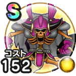

ヴァルハラー
15章9話〜16章8話こころ最大コスト+4スキルの斬撃・体技ダメージ+10%イオ属性斬撃・体技ダメージ+10%【ゴドハン】会心率+4%【ニンジャ】威圧状態の相手へのダメージ+10%【守り人】さいだいHP+40【ドラゴン】ちから+20 / 9.0点
くわしい特徴
【ランク特殊効果】 こころ最大コスト+4スキルの斬撃・体技ダメージ+10%イオ属性斬撃・体技ダメージ+10%ヒャド属性斬撃・体技ダメージ+10%【ゴドハン】会心率+5%【ニンジャ】威圧状態の相手へのダメージ+12%【守り人】さいだいHP+50【ドラゴン】ちから+25こころ最大コスト+4スキルの斬撃・体技ダメージ+10%イオ属性斬撃・体技ダメージ+10%【ゴドハン】会心率+4%【ニンジャ】威圧状態の相手へのダメージ+10%【守り人】さいだいHP+40【ドラゴン】ちから+20